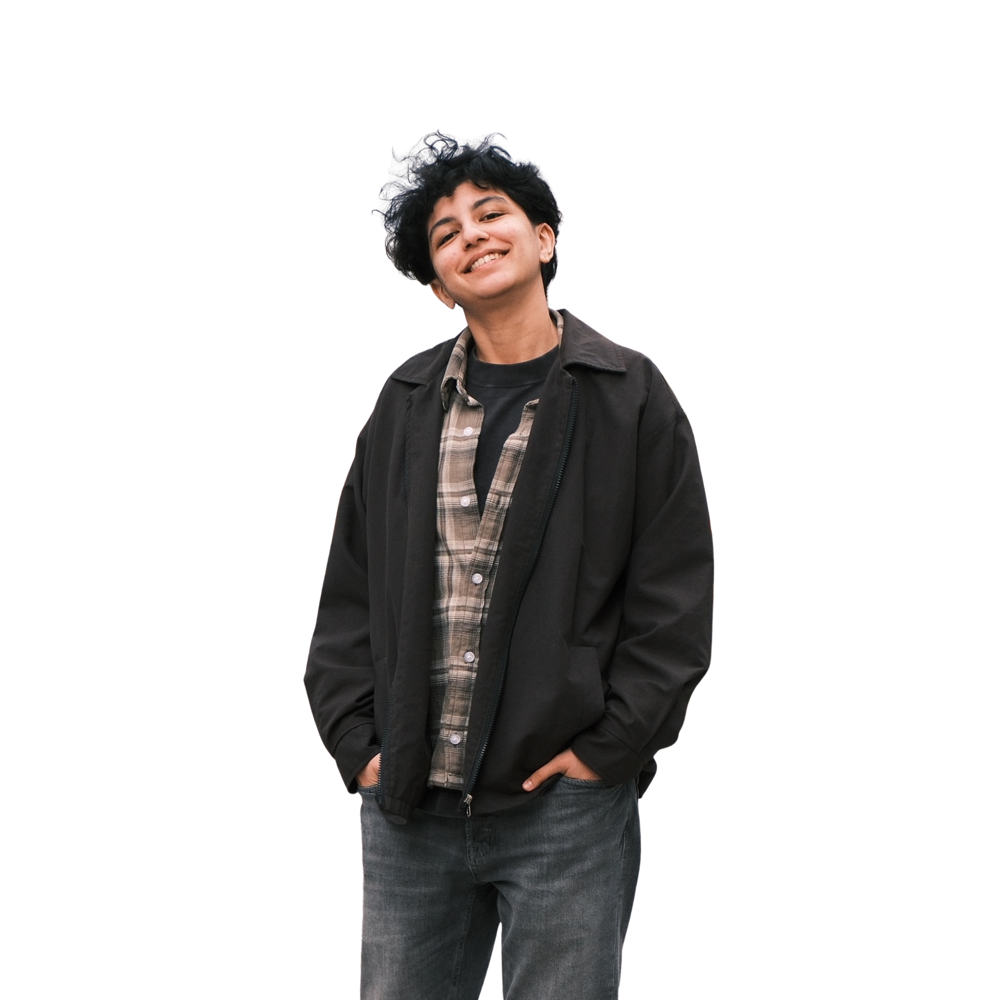

Hello there
I'm Ghazal.
I'm a Computer Science student at FH Campus Wien (3rd semester, part-time/berufsbegleitend) and currently working as an IT Intern at Schneider Electric, where I'm involved in Industry 4.0 projects, OT network segmentation, and cybersecurity strategy. I also do freelance web development on the side.
Before moving to Vienna, I spent six years studying and practicing dentistry in Iran, including four years of specialized work in pediatric dentistry. Coming to CS without a technical background meant I had to build everything from scratch, and I find that I actually work better that way.
I'm drawn to problems that sit at the intersection of data, systems, and people. That's what pulls me toward data science and cybersecurity, and probably also why I still think about organizational behavior and how institutions work.

What I'm into
These fields aren't as separate as they look. Data science, cybersecurity, and organizational culture all come down to understanding how systems behave and where they break. That's the thread I keep following.
Education
Bachelor of Computer Science and Digital Communications
Hochschule Campus Wien, University of Applied Sciences
A new chapter where I am formally building on my technical foundation, focusing on algorithms, programming, and digital technologies.
Doctor of Dental Surgery (DDS)
Azad University of Isfahan, Iran
Dentistry gave me more than medical expertise — it taught me discipline, accuracy, and empathy, skills I now apply to every field I work in.
Right now
Working as an IT Intern at Schneider Electric, supporting Industry 4.0 and smart factory projects, OT network segmentation, and the EU Cyber Resilience Act. Also acting as CSL Deputy (Cyber Security Lead Deputy).
Finishing my 3rd semester at FH Campus Wien. Taking on freelance web development projects on the side. Teaching programming and Python to teenagers at Hobby Lobby in German and English.
Quick Q&A
Why computer science?
Honestly, I got there through data. I was doing research assistant work in medical imaging and realized the part I found most interesting was the analysis side. CS was the logical next step. The fact that I'm starting it at 30 without a traditional background doesn't bother me — if anything it makes it more interesting.
What does "exploring human systems" mean to you?
I'm drawn to the question of how systems — organizations, institutions, networks — behave and why they sometimes fail. Dentistry taught me that most problems in a complex system aren't random. There's usually a structural reason. I carry that lens into everything I work on now.
What are you hoping to do after graduation?
Something that involves data, security, or both. I'm open to where that leads — right now I'm more focused on building the foundation and staying curious than committing to a specific job title.
What do you do outside of code?
Gym, cycling, hiking. I play piano and electric guitar. I read a lot, usually about history, anthropology, or how things work. I also teach programming to teenagers, which keeps me honest about whether I actually understand what I'm explaining.
Get in touch
I'm always up for interesting conversations, collaborations, or just a coffee chat.